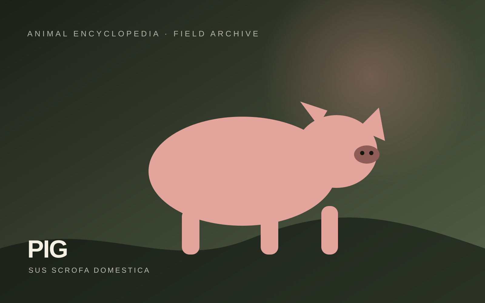

Pig
Pig production includes organised commercial systems and locally adapted indigenous populations suited to different Indian environments.

Understanding Pig
Pigs are monogastric livestock raised primarily for pork. Production systems range from smallholder units to intensive commercial farms.
Form, function & field recognition
Pigs have a compact body, strong snout and omnivorous feeding biology. Breed type influences growth, body conformation and production purpose.
Identification should combine visible morphology, geographic association, production purpose and recognised breed descriptors rather than relying on one feature alone.
- Observe body type, coat/skin/feather pattern and head or horn features where relevant.
- Relate the animal to its production role and local agro-climatic environment.
- Use institutional breed descriptors for final identification.
Why this group matters
Pig farming can provide income and meat production, particularly where locally appropriate production systems are available.
Daily husbandry
Use clean, well-drained housing, adequate space, balanced feed, reliable water and strong hygiene. Preventive health programmes should follow veterinary advice.
Good husbandry combines suitable feed and water, clean housing, ventilation, observation, preventive healthcare, biosecurity, humane handling and records. Exact rations and medicines should follow qualified local advice.
Breed collection
Click any entry to leave the collection and open a dedicated, detailed profile page.
Large White Yorkshire
White commercial-type pig with erect ears and strong growth reputation.
Open full profile →Landrace
White breed with long body and characteristic drooping ears.
Open full profile →Hampshire
Black pig with a distinctive white shoulder belt.
Open full profile →Ghungroo
Hardy indigenous pig associated with eastern Indian smallholder systems.
Open full profile →Niang Megha
Local pig adapted to north-eastern Indian conditions.
Open full profile →Agonda Goan
Local pig population associated with Goa.
Open full profile →Nicobari
Local pig adapted to island conditions.
Open full profile →Andamani
Indigenous island pig population.
Open full profile →Nagal
Local pig population associated with Nagaland.
Open full profile →Study cues
Research trail
Core references include ICAR-NBAGR Breed Registration Cell, official breed directories, and ICAR fisheries/livestock resources.